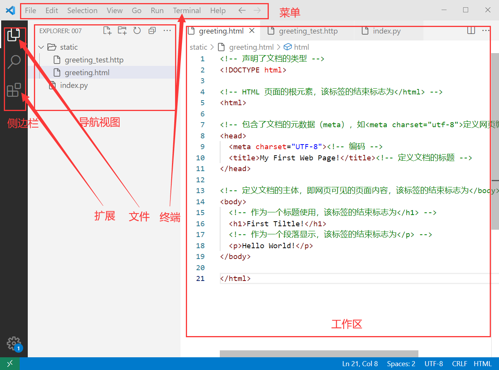

开发环境建立
1 实验类型
验证型，2学时，必选实验
2 实验目的
-
建立前端开发环境
-
建立后端开发环境
-
熟悉前代码调试基本过程
3 实验要求
-
安装前端开发所需软件；创建Hello World!页面作为系统入口；实现后端入口；
-
实验完成后，将HTML代码整理成实验报告
报告以Word格式编写，以学号作为文件名
实验报告至少应用包含：关键步骤截图、源代码
4 实验环境
Windows 7+，浏览器（推荐Microsoft Edge/Chrome/Firefox等），Visual Studio Code(Vscode)，REST Client扩展，Python 3+，Uvicorn，FastAPI
5 约定
正文中会使用{变量名}语法（类似Python格式化字符串），如张三同学的学号为007，引用变量{学号}实际替换为007。
6 实验步骤
创建工作目录：盘符:/{学号}，如：C:/007，后续文件均存放在工作目录
安装Visual Studio Code
-
下载Vscode
在官网下载https://code.visualstudio.com/
或在课程群文件中下载
-
启动安装向导；安装过程中选中将vscode加入文件夹右键
-
在资源管理器中打开工作目录
-
并在目录内空白处右键打开快捷菜单，选择
通过Code打开，界面布局如下：
-
修改终端默认类型为cmd，在菜单
View/Command Pallete...中输入Terminal:Select Default Profile回车后在弹出菜单中选择Command Prompt -
在
浏览器(文件)视图中创建static文件夹 -
创建Hello World!入口页面
static/greeting.html，参考代码如下： -
在
浏览器(文件)视图中右键static/greeting.html，选中快捷菜单Open in default browser并在浏览器中观察页面显示情况
安装Python
-
下载Python
在官网下载https://www.python.org/downloads/
或在课程群文件中下载
-
启动安装向导，勾选
Add python.exe to PATH，Use admin privileges when installing py.exe -
安装成功后在Vscode的
终端(Terminal)菜单中新建终端注意终端类型为
cmd -
在终端中查看Python版本及依赖情况，确认Python与pip工具已正确安装
-
修改pip仓库为阿里镜像服务器
-
使用pip安装服务端依赖
-
在工作目录创建后端入口文件
index.py，参考代码如下：注意：与static目录相关的代码
-
在终端(Terminal)启动服务器，留意终端输出
启动服务
REST Client测试
-
在Vscode侧边栏中打开扩展视图
-
在搜索框输入
REST Client -
在搜索结果中选中
REST Client并安装 -
创建REST Client测试文件：
static/greeting_test.http，代码如下： -
在Vscode浏览视图中选中
static/greeting_test.http -
在代码编辑器中点击第2行代码上方的
Send Request链接如果没有出现该链接，请检查前述步骤
-
观察返回代码中与Http相关的各选项
浏览器测试
-
启动浏览器并地址栏输入
http://localhost:8000/static/greeting.html
-
在浏览器中打开(快捷键F12)开发者工具，熟悉各选项卡中的界面，留意与
greeting.html页面相关内容注：最常用的几个选项卡有：Element，Source，Network等
-
在
Netwrok选项卡中选中greeting.html观察标头等选项卡中与Http相关的各选项
调试
-
将输出字符串
Hello World!改为Hello Web！ -
分别在浏览器和REST Client测试